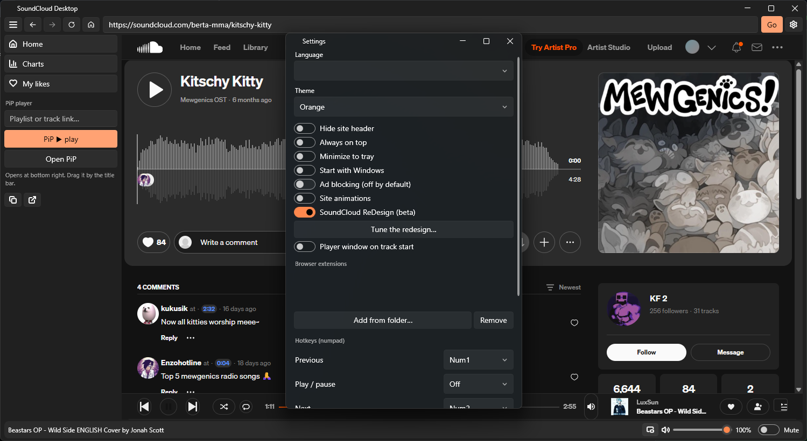
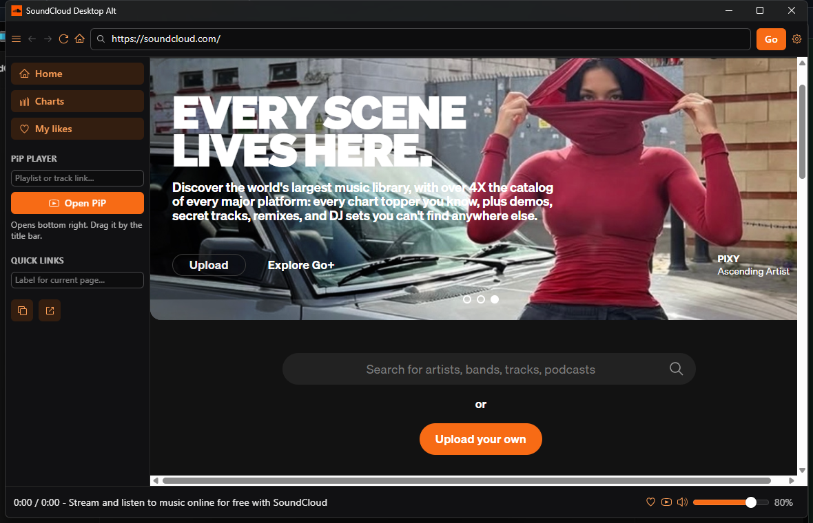

Classic
Windows - 3 MB
The main build. Fluent shell, Now playing popup, PiP player, hotkeys, extensions, 14 themes, encrypted local settings.
DownloadUnofficial fan client
A 3 MB portable app around the real site. No installer, no services, no telemetry. Login sticks, music keeps playing in the tray.
Three separate apps, one shared goal: SoundCloud without bloat.
Windows - 3 MB
The main build. Fluent shell, Now playing popup, PiP player, hotkeys, extensions, 14 themes, encrypted local settings.
DownloadWindows + Linux - Electron + Radix
The playground build: real Radix Themes interface, 20 extra desktop features, shell themes, sleep timer, stats, update checker.
DownloadWindows x64 + x86 - one file
One file and nothing else. Just SoundCloud in a window, login kept in system files. No settings, no chrome, no noise.
DownloadReal windows, captured from running builds.

Classic: Fluent shell, sidebar, Now playing bar.

Alternative UI: Radix shell with navigation and sidebar.
| Build | Windows x64 | Windows x86 | Linux x64 | macOS |
|---|---|---|---|---|
| Classic (WPF) | Yes | No | No - WPF is Windows-only | No - WPF is Windows-only |
| Alternative UI (Electron) | Yes | No | Yes, portable tar | Yes, app tar via CI |
| Light (single file) | Yes, single exe | Yes, single exe | Yes, portable tar | Yes, app tar via CI |
Linux builds are produced automatically by CI on every release. Classic cannot come to Linux: WPF only exists on Windows.
Loaded live from GitHub, nothing hardcoded.
Loading…
Real files from the repository, opened in the editor. Pick a file on the left.
Loading…
Every file below links to its VirusTotal report by SHA-256. Hashes are read live from the latest release, compare them with your download before running it.
Loading…
How to check locally: on Windows run certutil -hashfile file.exe SHA256, on Linux run sha256sum file, then compare with the hash shown here.
No. Fan project, not affiliated with SoundCloud. All music and trademarks belong to SoundCloud and its artists.
Classic needs WebView2 Runtime, preinstalled on most Win10/11 machines. Light installs it for you if it is missing. Alt needs nothing extra on Windows.
In system files, never next to the exe: Classic uses LocalAppData, Alt uses its Electron profile, Light uses its own LocalAppData folder.
Playback and login are the real site inside the app. If SoundCloud changes its layout, open an issue on GitHub.
Alt is the experimental playground: new features land there first, Classic stays the safe choice.
Packed single-file apps sometimes trigger heuristic false positives. Compare the SHA-256 hash from the Safety section before running.
Alt checks GitHub on launch. For Classic and Light, grab new files from the releases page.
Portable apps leave no trace: unpack, run, delete the folder when done. Settings live in system files either way.